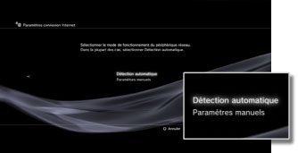
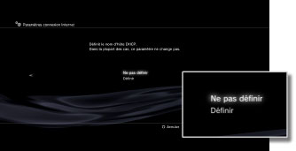
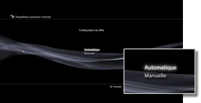
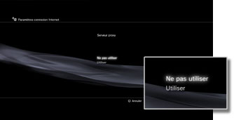
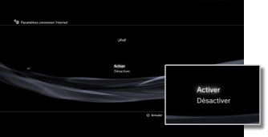

Paramètres > Paramètres réseau > Paramètres connexion Internet (paramètres avancés)
Paramètres connexion Internet (paramètres avancés)
Si vous ne parvenez pas à vous connecter à Internet avec les paramètres de base, modifiez vos paramètres si nécessaire. Réglez chaque élément conformément à votre environnement réseau particulier.
1. |
Sélectionnez |
|---|---|
2. |
Sélectionnez [Paramètres connexion Internet]. |
3. |
Sélectionnez [Personnalisé]. |
 (Paramètres réseau) sous
(Paramètres réseau) sous  (Paramètres).
(Paramètres).Méthode de connexion
Pour définir la méthode de connexion à Internet. Ce paramètre est uniquement disponible sur des systèmes PS3™ dotés de la fonctionnalité LAN sans fil.

| Connexion par câble | Pour établir une connexion par câble l'aide d'un câble Ethernet |
|---|---|
| Sans fil | Pour établir une connexion sans fil via un réseau local sans fil |
Paramètres WLAN
Définissez le SSID du point d'accès. Ce paramètre est uniquement disponible sur les systèmes PS3™ équipés de la fonctionnalité LAN sans fil.

| Scan | Pour rechercher un point d'accès à proximité. Sélectionnez cette option lorsque vous ne connaissez pas le SSID du point d'accès. Le système détecte des points d'accès à proximité et affiche des informations sur les paramètres SSID et de sécurité. |
|---|---|
| Saisir manuellement | Pour spécifier le point d'accès en saisissant manuellement son SSID à l'aide d'un clavier. Sélectionnez cette option lorsque vous connaissez le SSID. |
| Automatique | Pour utiliser la fonctionnalité de réglage automatique du point d'accès. Cette option est uniquement disponible dans les régions où les systèmes PS3™ qui prennent en charge cette fonctionnalité sont vendus. Sélectionnez cette option si vous utilisez un point d'accès prenant en charge la configuration automatique. Suivez les instructions affichées. |
Paramètre de sécurité WLAN
Pour définir une clé de chiffrement pour un point d'accès. Ce paramètre est uniquement disponible sur les systèmes PS3™ équipés de la fonctionnalité LAN sans fil.

| Aucun | Pour ne définir aucune clé de chiffrement. |
|---|---|
| WEP | Pour définir une clé de chiffrement. La clé de chiffrement peut être saisie dans l'écran suivant. La clé de chiffrement est affichée par une série d'astérisques. |
| WPA-PSK / WPA2-PSK |
Paramètre d'authentification
Ces paramètres sont disponibles uniquement sur les systèmes PS3™ vendus en Corée et sur les systèmes PS3™ équipés de la fonctionnalité LAN sans fil.
| Aucun | Pour ne définir aucune information d'authentification. |
|---|---|
| EAP-MD5 | Pour définir des informations d'authentification pour l'utilisation de services WLAN publics. Saisissez votre ID et votre mot de passe dans l'écran suivant. Pour plus de détails, reportez-vous aux instructions fournies par le fournisseur de services WLAN public. |
Mode de fonctionnement Ethernet
Pour définir la vitesse de transfert de données Ethernet et le mode de fonctionnement. Généralement, sélectionnez [Détection automatique].

| Détection automatique | Pour définir automatiquement les paramètres de base. |
|---|---|
| Paramètres manuels | Pour définir manuellement la vitesse de transfert de données Ethernet et le mode de fonctionnement. |
Configuration de l'adresse IP
Pour définir la méthode d'obtention d'une adresse IP lors de la connexion à Internet.
| Automatique | Pour utiliser l'adresse IP allouée par le serveur DHCP. Vous pouvez saisir le nom d'hôte du serveur DHCP dans l'écran suivant. |
|---|---|
| Manuelle | Pour définir l'adresse IP manuellement. Vous pouvez saisir des valeurs pour l'adresse IP, le masque de sous-réseau, le routeur par défaut et les DNS primaire et secondaire dans l'écran suivant. |
| PPPoE | Pour se connecter à Internet à l'aide de PPPoE. Vous pouvez saisir votre ID et votre mot de passe dans l'écran suivant. |
DHCP
Pour définir le nom d'hôte DHCP. En principe, sélectionnez [Ne pas définir].

| Ne pas définir | Pour ne pas définir le nom d'hôte DHCP. |
|---|---|
| Définir | Pour définir le nom d'hôte DHCP. |
Configuration du DNS
Pour définir le serveur DNS.

| Automatique | Pour obtenir automatiquement l'adresse du serveur DNS. |
|---|---|
| Manuelle | Pour saisir manuellement l'adresse du serveur DNS. |
MTU
Pour configurer la valeur MTU utilisée lors d'une transmission de données. Généralement, sélectionnez [Automatique].
| Automatique | Pour définir automatiquement la valeur MTU. |
|---|---|
| Manuelle | Pour spécifier la taille maximale des paquets de données (en octets) pouvant être envoyés lors d'une transmission. |
Serveur proxy
Pour définir le serveur proxy à utiliser.

| Ne pas utiliser | Pour ne pas utiliser de serveur proxy. |
|---|---|
| Utiliser | Pour utiliser un serveur proxy. Vous pouvez saisir l'adresse du serveur proxy et le numéro de port dans l'écran suivant. |
UPnP
Pour choisir d'activer ou de désactiver UPnP (Universal Plug and Play).

| Activer | Pour activer UPnP. |
|---|---|
| Désactiver | Pour désactiver UPnP. |
Conseil
Si vous choisissez [Désactiver], les communications risquent d'être limitées lorsque vous utilisez le chat vocal / vidéo ou les fonctions de communication des jeux.